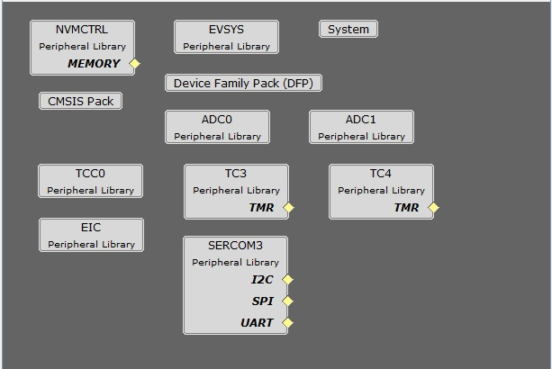
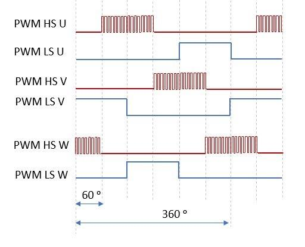
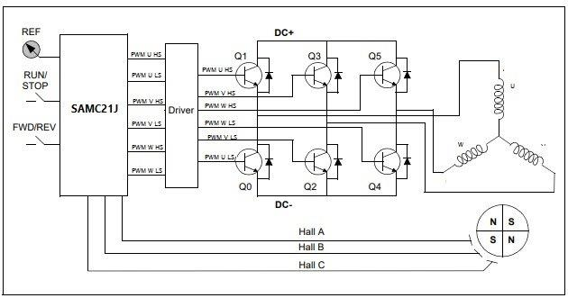
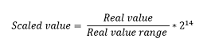
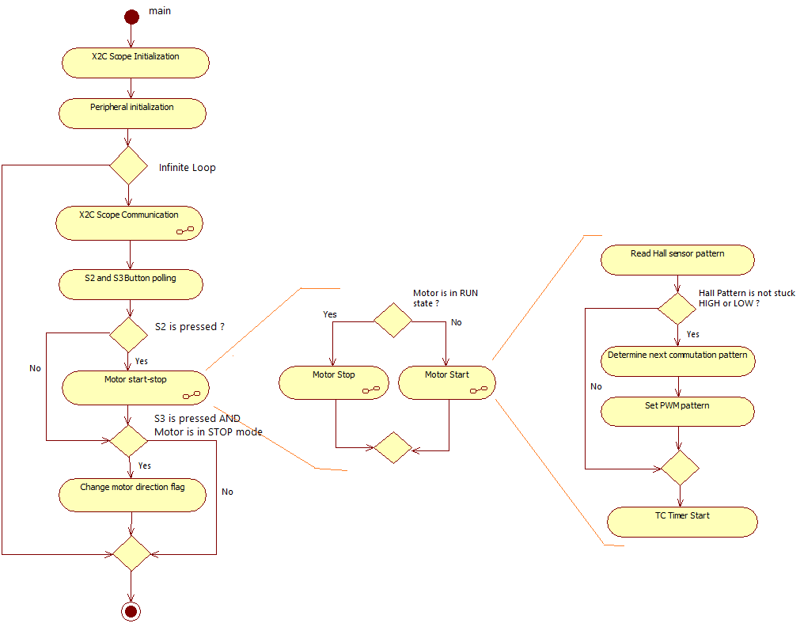
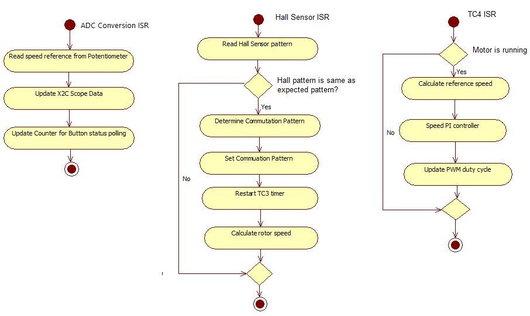
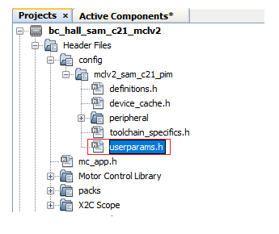
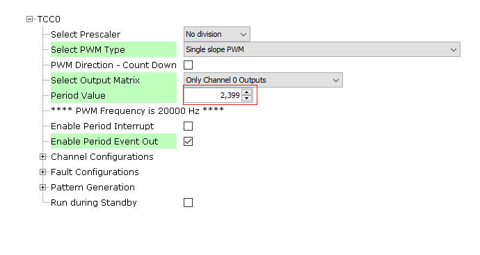

BLDC Block Commutation using Hall Sensor
Brushless Direct Current electric motor, or BLDC motors for short, are electronically commutated motors powered by a DC electric source via an external motor controller. This document serves as a guidance to build, configure and run Block Commutation algorithm for BLDC motors on Microchip’s 32-bit SAMC21 microcontroller devices.
Description
Brushless Direct Current (BLDC ) motor is controlled using Hall signal based commutation. Motor start/stop operation is controlled by the switch and motor speed can be changed by the on-board potentiometer. Waveforms and variables can be monitored runtime using X2CScope.
Key features enabled in this project are:
- BLDC Commutaton
MHC Project Configurations

-
ADC0-ADC1 Peripheral:
- ADC0 and ADC1 are setup to operate in Master - Slave mode with ADC0 acting as a Master
- Both ADCs convert single ended inputs. DC link current is sampled and converted by ADC0 which can be used for current control. Potentiometer is sampled and converted by ADC1
- Both ADCs are hardware triggered simultaneously by an event generated from TCC0 at the end of each PWM cycle
- Conversion Ready interrupt is generated by ADC0. Since both ADCs are triggered simultaneously and have same resolution and sampling time, both ADCs complete conversion at the same time
- TCC0 Peripheral:
- Configured to generate 3 pairs of single PWM signals at frequency of 20 kHz in Edge Aligned Mode
- Event output is enabled which is generated for counter overflow
- Non-recoverable Fault is enabled on EV0. When an event is detected on EV0, all PWM channels are held low
- TC3-TC4 Peripheral:
- TC3 peripheral is used as a timer to measure the time elapsed between two consecutive hall edges
- TC4 peripheral is used as an internal 1 mS timer counter
- EIC:
- External Interrupt Controller detects hardware over-current fault input and generates a non-recoverable fault event for TCC0, thereby shutting down the PWM in the event of an over-current fault
- External Interrupt control also detects hall sensor edges allowing the software to update the commutation pattern
- EVSYS:
- Event System acts as a traffic cop between event generator and event users
- Event generated by the TCC0 when the counter overflows, is used by the ADC0 as a hardware trigger source via Event System
- Event generated by the EIC upon over-current fault, is used by the TCC0 as a non-recoverable fault event via Event System
- SERCOM3 Peripheral:
- SERCOM3 is configured in USART mode and is set to operate at 115200 bps.
- This USART channel is used by the X2CScope plugin to plot or watch global variables in run-time. Refer to X2C Scope Plugin section for more details on how to install and use the X2CScope.
Control Algorithm
Brushless Direct Current electric motors, or BLDC motors for short, are electronically commutated motors powered by a DC electric source via an external motor controller. The electronic commutation to rotate the motor is achieved by a three phase inverter. The commutation technique are broadly classified as block Commutation and Sinusoidal commutation. The block commutation has reduced system complexity as compared to the sinusoidal commutation. Hence, the block commutation technique is quite popular for the low cost applications where control precision, reduced efficiency, and higher acoustic noise are permitted.
The BLDC motor control using block commutation is done as follows:
- Read the hall sensor input pattern from three 120 degree spatially oriented hall sensor.
- Use the hall sensor pattern to determine the three phase inverter commutation pattern.
Below diagram shows the high side modulated PWM:

The simplified block diagram for BLDC block commutation is shown below:

Software Design
This section describes the software design of BLDC block commutation application. The first part of this section, numerical scaling for fixed-point implementation is briefly described. The later section, the software implementation of the example project is described.
Scaling:
The example project uses Q14 format to represent the real-time physical quantities as follows:

The real value range of voltage, current and speed is chosen as independent base quantities for deriving the range of other physical quantities. The independent base quantities are determined by considering the electrical constraints of the MCLV2 development board and the motor used.
Software Implementation
 
Software Configuration
The motor specific parameters, board specific parameters and application parameter macros have to be updated in the software for optimal control of the BLDC motor. The following section briefly describes motor and application specific parameters used in the project. These parameter macros can be found in userparams.h header file which can be found under logical path: Header Files > config >

Setting motor control PWM frequency and dead-time:
PWM frequency is set by configuring the timer period of the TCC0 in terms of TCC0 clock counts. This frequency needs to be communicated to other sections in the algorithm by defining the “Period Value” (set in MPLAB Harmony Configurator) + 1 as a macro in userparams.h. For example, in order to achieve a PWM frequency of 20 KHz in edge aligned mode with peripheral clock frequency of 48MHz, the period value defined in MHC is 2399. Therefore, the macro defined in userparams.h should be “period value” + 1 = 2400.

| Macro | Description |
|---|---|
| PWM_HPER_TICKS | PWM Timer period value = “Period value” defined in MHC + 1 |
| DEAD_TICKS | Dead-time defined in terms of PWM timer ticks = “Dead time value” defined in MHC |
Setting motor specific parameters:
Set the following motor specific parameters in the userparams.h file.
| Macro | Description | Unit |
|---|---|---|
| MAX_MOTOR_POLE_PAIRS | Number of Pole Pairs | - |
| MAX_MOTOR_SPEED | Rated speed of the motor | RPM |
Setting hall pattern and commutation pattern:
Below table gives the hall and commutation pattern relation for long hurst and small hurst motors.
| HA | HB | HC | Pattern | Phase U | Phase V | Phase W |
|---|---|---|---|---|---|---|
| 0 | 0 | 1 | V+W- | 0 | H | L |
| 1 | 0 | 1 | U-V+ | L | H | 0 |
| 1 | 0 | 0 | U-W+ | L | 0 | H |
| 1 | 1 | 0 | V-W+ | 0 | L | H |
| 0 | 1 | 0 | U+V- | H | L | 0 |
| 0 | 1 | 1 | U+W- | H | 0 | L |
Hall pattern and commutation patterns are defined in the mc_app.c file. HALL_ARRAY[16] array contains the hall pattern for both the directions - first 8 entries are for clockwise direction and next 8 entries are for anti-clockwise direction.
COMMUTATION_ARRAY[16] array contains commutation pattern corresponding to the hall pattern - first 8 entries are for clockwise direction and next 8 entries are for anti-clockwise direction.
e.g The entry in the commutation array for V+W- is 0x4075. This is given in terms of the pattern enable register TCC_PATT.
Pattern value configuration for V+W- is 0x40. This means low side switch of Phase W is continuously ON.
| X | W- | V- | U- | X | W+ | V+ | U+ |
|---|---|---|---|---|---|---|---|
| 0 | 1 | 0 | 0 | 0 | 0 | 0 | 0 |
Phase V high side switch where PWM will be applied as per speed command.
| X | W- | V- | U- | X | W+ | V+ | U+ |
|---|---|---|---|---|---|---|---|
| 0 | 1 | 1 | 1 | 0 | 1 | 0 | 1 |
Development Kits
MCLV2 with SAMC21 Family Motor Control PIM
Downloading and building the application
To clone or download this application from Github, go to the main page of this repository and then click Clone button to clone this repository or download as zip file. This content can also be downloaded using content manager by following these instructions.
Path of the application within the repository is apps/bldc_bc_hall_sam_c21 .
To build the application, refer to the following table and open the project using its IDE.
| Project Name | Description | Demo User Guide |
|---|---|---|
| mclv2_sam_c21_pim.X | MPLABX project for MCLV2 board with SAMC21 PIM | MCLV2 with SAMC21 PIM |